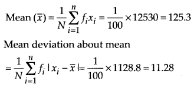

Statistics Class 11 Maths NCERT Solutions are extremely helpful while doing your homework. NCERT Solutions for Class 11 Maths Chapter 15 Statistics All Exercises were prepared by Experienced LearnCBSE.in Teachers.
Free download NCERT Solutions for Class 11 Maths Chapter 15 Statistics Ex 15.1, Ex 15.2, Ex 15.3, and Miscellaneous Exercise PDF in Hindi Medium as well as in English Medium for CBSE, Uttarakhand, Bihar, MP Board, Gujarat Board, BIE, Intermediate and UP Board students, who are using NCERT Books based on updated CBSE Syllabus for the session 2019-20.
- Statistics Class 11 Ex 15.1
- Statistics Class 11 Ex 15.2
- Statistics Class 11 Ex 15.3
- Statistics Class 11 Miscellaneous Exercise
NCERT Solutions for Class 11 Maths Chapter 15 Statistics
Topics and Sub Topics in Class 11 Maths Chapter 15 Statistics:
| Section Name | Topic Name |
| 15 | Statistics |
| 15.1 | Introduction |
| 15.2 | Measures of Dispersion |
| 15.3 | Range |
| 15.4 | Mean Deviation |
| 15.5 | Variance and Standard Deviation |
| 15 .6 | Analysis of Frequency Distributions |
NCERT Solutions for Class 11 Maths Statistics Ex 15.1
Find the mean deviation about the mean for the data in Exercises 1 and 2.
Ex 15.1 Class 11 Maths Question 1.
4, 7, 8, 9, 10, 12, 13, 17
Solution:
Mean of the given data is
Ex 15.1 Class 11 Maths Question 2.
38, 70, 48, 40, 42, 55, 63, 46, 54, 44
Solution:
Mean of the given data is
Ex 15.1 Class 11 Maths Question 3.
13, 17, 16, 14, 11, 13, 10, 16, 11, 18, 12, 17
Solution:
Arranging the data in ascending order, we have
10, 11, 11, 12, 13, 13, 14, 16, 16, 17, 17, 18
Here n = 12 (which is even)
So median is the average of 6th and 7th observations
Ex 15.1 Class 11 Maths Question 4.
36, 72, 46, 42, 60, 45, 53, 46, 51, 49
Solution:
Arranging the data in ascending order, we have 36, 42, 45, 46, 46, 49, 51, 53, 60, 72
Here n = 10 (which is even)
So median is the average of 5th and 6th observations
Find the mean deviation about the mean for the data in Exercises 5 and 6.
Ex 15.1 Class 11 Maths Question 5.
Solution:
Ex 15.1 Class 11 Maths Question 6.
Solution:
Find the mean deviation about the median for the data in Exercises 7 and 8.
Ex 15.1 Class 11 Maths Question 7.
Solution:
Ex 15.1 Class 11 Maths Question 8.
Solution:
Find the mean deviation about the mean for the data in Exercises 9 and 10.
Ex 15.1 Class 11 Maths Question 9.
Solution:
Ex 15.1 Class 11 Maths Question 10.
Solution:

Ex 15.1 Class 11 Maths Question 11.
Find the mean deviation about median for the following data:
Solution:
Ex 15.1 Class 11 Maths Question 12.
Calculate the mean deviation about median age for the age distribution of 100 persons given below:
[Hint: Convert the given data into continuous frequency distribution by subtracting 0.5 from lower limit and adding 0.5 to the upper limit of each class interval]
Solution:
NCERT Solutions for Class 11 Maths Chapter 15 Statistics (सांख्यिकी) Hindi Medium Ex 15.1


NCERT Solutions for Class 11 Maths Statistics Ex 15.2
Find the mean and variance for each of the data in Exercises 1 to 5.
Ex 15.2 Class 11 Maths Question 1.
6, 7, 10, 12, 13, 4, 8, 12
Solution:
Here xi = 6, 7, 10, 12, 13, 4, 8, 12
∴ Σxi = 6 + 7 + 10 + 12 + 13 + 4 + 8 + 12 = 72
n = 8
Ex 15.2 Class 11 Maths Question 2.
First n natural numbers
Solution:
Here xi = 1, 2, 3, 4, ……….n
Ex 15.2 Class 11 Maths Question 3.
First 10 multiples of 3
Solution:
Here xi = 3, 6, 9, 12, 15, 18, 21, 27, 30,
Σxi = 3 + 6 + 9 + 12 + 15 + 18 + 21 + 24 + 27 + 30 = 165
n = 10
Ex 15.2 Class 11 Maths Question 4.

Solution:
Ex 15.2 Class 11 Maths Question 5.
Solution:
Ex 15.2 Class 11 Maths Question 6.
Find the mean and standard deviation using short-cut method
Solution:

Find the mean and variance for the following frequency distributions in Exercises 7 and 8.
Ex 15.2 Class 11 Maths Question 7.
Solution:
Ex 15.2 Class 11 Maths Question 8.
Solution:

Ex 15.2 Class 11 Maths Question 9.
Find the mean, variance and standard deviation using short-cut method.
Solution:
Ex 15.2 Class 11 Maths Question 10.
The diameters of circles (in mm) drawn in a design are given below:
Calculate the standard deviation and mean diameter of the circles.
[Hint: First make the data continuous by making the classes as 32.5 – 36.5, 36.5 – 40.5, 40.5 – 44.5, 44.5 – 48.5, 48.5 – 52.5 and then proceed.]
Solution:
NCERT Solutions for Class 11 Maths Statistics Ex 15.3
Ex 15.3 Class 11 Maths Question 1.
From the data given below state which group is more variable, A or B?

Solution:
For Group A :

Ex 15.3 Class 11 Maths Question 2.
From the prices of shares X and Y below, find out which is more stable in value:
Solution:
Ex 15.3 Class 11 Maths Question 3.
An analysis of monthly wages paid to workers in two firms A and B, belonging to the same industry, gives the following results:
(i) Which firm A or B pays larger amount as monthly wages?
(ii) Which firm, AorB, shows greater variability in individual wages?
Solution:
(i) Firm A :
Number of wage earners (n1) = 586
Mean of monthly wages (\(\overline { { x }_{ 1 } } \)) = Rs.5253
∴ Total monthly wages = 5253 x 586
= Rs. 3078258
Firm B :
Number of wage earners (n2) = 648
Mean of monthly wages (\(\overline { { x }_{ 2 } } \)) = Rs.5253
∴ Total monthly wages = 5253 x 648
= Rs. 3403944
Hence, Firm B pays larger amount as monthly wages.
(ii) Since both the firms have same mean of monthly wages, so the firm with greater variance will have more variability in individual wages. Thus firm B will have more variability in individual wages.
Ex 15.3 Class 11 Maths Question 4.
The following is the record of goals scored by team A in a football session:

For the team B, mean number of goals scored per match was 2 with a standard deviation 1.25 goals. Find which team may be considered more consistent?
Solution:
For team A:
Ex 15.3 Class 11 Maths Question 5.
The sum and sum of squares corresponding to length x (in cm) and weight y (in gm) of 50 plant products are given below:

Which is more varying, the length or weight?
Solution:

Class 11 Maths NCERT Solutions – Miscellaneous Questions
Miscellaneous Exercise Class 11 Maths Question 1:
Ans:
Ex 15.3 Class 11 Maths Question 2:
Ans:
Ex 15.3 Class 11 Maths Question 3:
Ans:
Ex 15.3 Class 11 Maths Question 4:

Ans:
Ex 15.3 Class 11 Maths Question 5:
Ans:
Ex 15.3 Class 11 Maths Question 6:

Ans:
Ex 15.3 Class 11 Maths Question 7:
Ans:
Exercise 15.1
Q1. Calculate the mean deviation about the mean for the given data
5, 8, 9, 10, 11, 13, 14, 18
Q2. Calculate the mean deviation about the mean for the given data
39, 71, 49, 41, 43, 56, 64, 47, 55, 45
Q3. Calculate the mean deviation about the median for the given data:
13, 16, 11, 10, 11, 12, 17, 14, 13, 16, 18, 17
Q4. Calculate the mean deviation about the median for the given data:
36, 46, 60, 53, 51, 72, 42, 45, 46, 49
Q5. Calculate the mean deviation about the mean for the given data
| xi | 5 | 10 | 15 | 20 | 25 |
| fi | 7 | 4 | 6 | 3 | 5 |
Q6. Calculate the mean deviation about the mean for the given data
| xi | 10 | 10 | 15 | 20 | 25 |
| fi | 7 | 4 | 6 | 3 | 5 |
Q7. Calculate the mean deviation about the median for the given data
| xi | 10 | 10 | 15 | 20 | 25 |
| fi | 7 | 4 | 6 | 3 | 5 |
| xi | 5 | 7 | 9 | 10 | 12 | 15 |
| fi | 8 | 6 | 2 | 2 | 2 | 6 |
Q8. Calculate the mean deviation about the median for the given data
| xi | 15 | 21 | 27 | 30 | 35 |
| fi | 3 | 5 | 6 | 7 | 8 |
Q9. Calculate the mean deviation about the mean for the given data:
| Income per day | Number of persons |
| 0 – 100 | 4 |
| 100 – 200 | 8 |
| 200 – 300 | 9 |
| 300 – 400 | 10 |
| 400 – 500 | 7 |
| 500 – 600 | 5 |
| 600 – 700 | 4 |
| 700 – 800 | 3 |
Q10. Calculate the mean deviation about the mean for the given data:
| Height in cm | Number of boys |
| 95 – 105 | 9 |
| 105 – 115 | 13 |
| 115 – 125 | 26 |
| 125 – 135 | 30 |
| 135 – 145 | 12 |
| 145 – 155 | 10 |
Q11. Calculate the mean deviation about the median for the given data:
| Marks | Number of girls |
| 0 – 10 | 6 |
| 10 – 20 | 8 |
| 20 – 30 | 14 |
| 30 – 40 | 16 |
| 40 – 50 | 4 |
| 50 – 60 | 2 |
Q12. Calculate the mean deviation about the median for the given data:
| Age | Number |
| 16 – 20 | 5 |
| 21 – 25 | 6 |
| 26 – 30 | 12 |
| 31 – 35 | 14 |
| 36 – 40 | 26 |
| 41 – 45 | 12 |
| 46 – 50 | 16 |
| 51 – 55 | 9 |
Exercise 15.2
Q1. Calculate mean and variance for the given data 6, 7, 10, 12, 13, 4, 8, 12
Q2. Calculate the mean and variance for the first n natural numbers.
Q3. Calculate the mean and variance for the first 10 multiples of 3.
Q4. Calculate the mean and variance for the data
| xi | 6 | 10 | 14 | 18 | 24 | 28 | 30 |
| fi | 2 | 4 | 7 | 12 | 8 | 4 | 3 |
Q5. Calculate the mean and variance for the data
| xi | 92 | 93 | 97 | 98 | 102 | 104 | 109 |
| fi | 3 | 2 | 3 | 2 | 6 | 3 | 3 |
Q6. Calculate the mean and standard deviation using short-cut method.
| xi | 60 | 61 | 62 | 63 | 64 | 65 | 66 | 67 | 68 |
| fi | 2 | 1 | 12 | 29 | 25 | 12 | 10 | 4 | 5 |
Q7. Calculate the mean and variance for the given frequency distribution.
| Classes | 0 – 30 | 30 – 60 | 60 – 90 | 90 – 120 | 120 – 150 | 150 – 180 | 180 – 210 |
| Frequencies | 2 | 3 | 5 | 10 | 3 | 5 | 2 |
Q8. Calculate the mean and variance for the following frequency distribution.
| Classes | 0 – 10 | 10 – 20 | 20 – 30 | 30 – 40 | 40 – 50 |
| Frequencies | 5 | 8 | 15 | 16 | 6 |
Q9. Calculate the mean, variance and standard deviation using short – cut method:
| Height in cm | Number of children |
| 70 – 75 | 3 |
| 75 – 80 | 4 |
| 80 – 85 | 7 |
| 85 – 90 | 7 |
| 90 – 95 | 15 |
| 95 – 100 | 9 |
| 100 – 105 | 6 |
| 105 – 110 | 6 |
| 110 – 115 | 3 |
Q10. The diameters of circles (in mm) drawn in a design are given below:
| Diameters | Number of Children |
| 33 – 36 | 15 |
| 37 – 40 | 17 |
| 41 – 44 | 21 |
| 45 – 48 | 22 |
| 49 – 52 | 25 |
Exercise 15.3
Q1. From the data given below state which group is more variable, A or B
| Marks | 10 – 20 | 20 – 30 | 30 – 40 | 40 – 50 | 50 – 60 | 60 – 70 | 70 – 80 |
| Group A | 9 | 17 | 32 | 33 | 40 | 10 | 9 |
| Group B | 10 | 20 | 30 | 25 | 43 | 15 | 7 |
Q2. From the prices of shares X and Y below, find out which is more stable in value.
| X | 35 | 54 | 52 | 53 | 56 | 58 | 52 | 50 | 51 | 49 |
| Y | 108 | 107 | 105 | 105 | 106 | 107 | 104 | 103 | 104 | 101 |
Q3. An analysis of monthly wages paid to workers in two firms A and B, belonging to the same industry, gives the following results:
| Firm A | Firm B | |
| No. of wage earners | 586 | 648 |
| Mean of monthly wages | Rs. 5253 | Rs. 5253 |
| Variance of the distribution of wages | 100 | 121 |
(i) Which firm A or B pays larger amount as monthly wages?
(ii) Which firm, A or B, shows greater variability in individual wages?
Q4. The following is the record of goals scored by team A in a football session:
| Number of goals scored | 0 | 1 | 2 | 3 | 4 |
| Number of matches | 1 | 9 | 7 | 5 | 3 |
For team B, the mean number of goals scored per match was 2 with a standard deviation of 1.25 goals. Find which team may be considered more consistent?
NCERT Solutions for Class 11 Maths All Chapters
- Chapter 1 Sets
- Chapter 2 Relations and Functions
- Chapter 3 Trigonometric Functions
- Chapter 4 Principle of Mathematical Induction
- Chapter 5 Complex Numbers and Quadratic Equations
- Chapter 6 Linear Inequalities
- Chapter 7 Permutation and Combinations
- Chapter 8 Binomial Theorem
- Chapter 9 Sequences and Series
- Chapter 10 Straight Lines
- Chapter 11 Conic Sections
- Chapter 12 Introduction to Three Dimensional Geometry
- Chapter 13 Limits and Derivatives
- Chapter 14 Mathematical Reasoning
- Chapter 15 Statistics
- Chapter 16 Probability